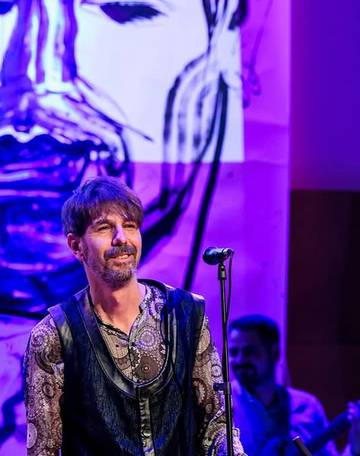
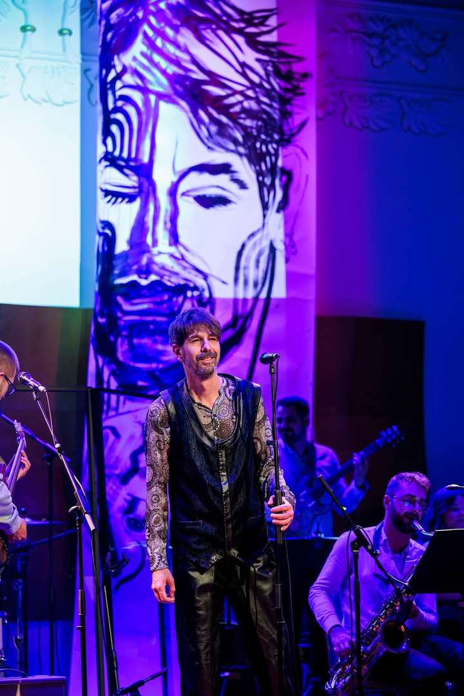

Nikola Čelan
TBF 1990–94 · Puntari 2000 · Iskon do 2006 · Libar
Novinar, književnik i glazbenik iz Splita. Rana postava TBF-a; izvorna postava klape Iskon (do 2006.); osnivač projekta Libar. Autor knjiga Silazak nad grad i Baština, predstave Baš beton te izdanja s Librom i Antunom Devčićem.

Kratki životopis
Od početka 1990-ih djeluje na splitskoj glazbenoj sceni, najprije u školskoj, predizdavačkoj postavi TBF-a, zatim u sastavu Rectum, klapi Puntari (2000.), klapi Iskon (2000.–2006.) i projektu Libar. Pisao je za dnevnike, tjednike i radiopostaje; uređivao fanzin Reful i kazališni mjesečnik Start. Godine 1999. na Splitskom ljetu premijerno je izveden njegov igrokaz Baš beton. S Puntarima je 2000. osvojio Srebrni štit na FDK Omiš. U izvornoj postavi Iskona pjeva bas: Ti si more, Nevera, album Ljubavne (2005.); iz klape izlazi 2006., prije njezine diskografske, novokomponirane faze. Godine 2005. objavio je Silazak nad grad, 2017. Baštinu.
Faze
TBF — rana postava (oko 1990.–1994.)
Školska postava s Mladenom Badovincem i Lukom Barbićem. Prvi javni nastup: 19. prosinca 1992., predgrupa Dinu Dvorniku u Kakaduu. Čelan izlazi oko 1994. Suradnja poslije: Baš beton 1999.; gostovanja 2017. i 2019. Nije diskografska postava od Ping-ponga (1997.).
Rectum (od 1994.)
Crossover / gitarski sastav. Snimke postoje; nisu u Discogs.
Klapa Puntari (2000.)
Srebrni štit, FDK Omiš 2000. Članstvo se svodi na tu festivalsku godinu.
Klapa Iskon (2000.–2006.)
Bas u izvornoj postavi. Ti si more, Nevera, album Ljubavne (2005.). Izlazak 2006. Kasnije emitiranje nije povratak u klapu.
Libar (2007.–)
- Klapa Libar — Prvi (2008.); Indexi 2009.
- Grupa Libar — Dite; album Libar (2012.).
- Dvojac — Čelan i Antun Devčić; EP Nova Zemlja (2025.).
Samostalno
Tvoj zakon, Goli ispred Boga, Spaljene rane (2021., Greenwood Studio).

Diskografija
| Razdoblje | Projekt | Uloga | Izdanje |
|---|---|---|---|
| 1990.–94. | TBF, rana postava | osnivanje, vokal | demo, radio, Kakadu 1992. |
| 2000. | Klapa Puntari | vokal | Srebrni štit, FDK Omiš |
| 2000.–2006. | Klapa Iskon | bas, izvorna postava | Ljubavne, Ti si more, Nevera |
| 2007.–2017. | Libar | osnivač, vokal | Prvi, Libar, Dite |
| 2021.–2025. | Solo / dvojac | autor, vokal | Spaljene rane, Kliješta, Nova Zemlja |
Iskon: Baren se iskaji nevirna, Bila golubice, Cesarica (live), Izišla je zelena naranča, Izresla ruža rumena, Lipa li si mare moja, Ne budi me mati (live), Niti san ja seljanka, Ostavljam te samu, Proplakat će me zora, Serenada Marići, Slatko spavaj, Zem'ja; s Lukyjem Ti si more, Nevera, Ča život bija bi bez nje, Škojarska pisma; TBF & Iskon — Splitsko stanje uma; Gibonni / Dedić / Black Coffee / Iskon — Sve ću preživit (live).
Gibonni: Hodaj, Mi svijetlimo, Sebi dovoljna, Zavezanih očiju, Vesla od zlata.
Klapa Libar: Ajde ća, Bi' mogo da mogu, Đelozija, Fragile, Hallelujah, Here Comes the Rain Again, Man on the Moon, Men' se dušo od tebe ne rastaje, Moja voda, Posljednji ples, Pusti da ti leut svira, Seagull, Voli me još ovu noć, Wonderful Tonight.
Libar: Dite, Čuvaj me, Glasnije, Kapi, Kliješta, Kukalo, Lađe, Mantra, Mir morskog dna, Na putu prema njoj, Ne mogu reći ti zbogom, Odrasli, Oprosti mi, Poljubac pod pomrčinom mjeseca, Tempus fugit, Vrh, Vrime radi svoje, Zakon soli; Gaeta; Tuđe oči.
Solo: Goli ispred Boga, Spaljene rane, Tvoj zakon.
Libar / dvojac: EP Nova Zemlja (Aquarius, 2025.) — Nova Zemlja, Kliješta, Nokturno, Krojeni za kraj (Neda Pejković).
Dječaci: prateći vokal na Lovrinac, album Istina (2011.).
Klapa Rustica: gost pjevač na snimci i glumac u spotu Budi se dan (Croatia Records, 2023.), vokalni aranžman pratnje s Branimirem Ančićem, spot. Singl Pobjeda je suđena (Croatia Records, 2025., Grand Prix Melodija hrvatskog juga): bas na snimci, spot. Vokalni aranžman na špici: Vinko Didović.
Scena
Utjecaj TBF-a nije jedna rečenica o pionirima. Često se sljepljuje s članstvom u diskografskoj postavi, a riječ je o slojevima koji se ne poklapaju: kanal prije kataloga, jezik koji postaje metoda, institucija koja jede žanr, i prijenosi u kazalište i knjigu. Libar nije nastavak tog utjecaja kao utjeha. To je drugi rat na istom terenu — Split kao subjekt, ovaj put višeglasjem izvan folklora i popom izvan estrade.
Kanal prije kataloga
Prije albuma Split hip-hop sluša s kazeta pomoraca i s MTV-a, a nema vlastitoga zapisa. Rana postava — Čelan, Mladen Badovinac, Luka Barbić, s prijateljima — radi kućnu produkciju, lokalni radio i prvi javni nastup. Nastup 19. prosinca 1992. pred Dinom Dvornikom na promociji Prirode i društva u Kakaduu ulazak je ulice na institucionalnu pozornicu prije nego što je postojao katalog.
Ping-pong (Umjetnost zdravog đira) (1997.) u više izvora stoji kao prvi cjeloviti hrvatski hip-hop album, ili kao prvi koji Split pretvara iz slušatelja u izdavača. Zagreb istih godina ima Tram 11; razlika nije tko je „prvi“, nego ton. Zagreb ide u politički registar; Split u kroniku grada, flegmu i crni humor. TBF otvara južnjački idiom: manje agresije, više melodije, liniju Miljenka Smoje i Tome Bebića uz formativno slušanje Public Enemyja. Žanrovski je utjecaj konkretan: sastav izmišlja ime ping-pong da preduhitri prigovor da to nije hip-hop. Mješavina rapa, živoga sastava, reggaeja, trip-hopa i sampla kasnije se normalizira. Tko u Hrvatskoj radi „rap s bendom“, radi u prostoru koji je otvorio taj album, a ne manifest.
Utjecaj teksta veći je od utjecaja ritma. Saša Antić ulazi 1993./94.; njegovi stihovi postaju mjerilo. Nasljeđuju se tri stvari kao metoda, ne kao citat: grad kao lik (ST stanje uma nije pjesma o Splitu — Split je subjekt), satira bez distance od ulice, odbitak turbofolka kao kulturni stav a ne kao ukus. Tekstopisac diskografske faze je Antić. Rana postava gradi kanal — radio, demo, Kakadu — kroz koji taj jezik kasnije izlazi. Utjecaj jezika nije Čelanov soloautoritet; utjecaj osnivanja kanala jest.
Od Maxona i Galerije Tutnplok TBF prestaje biti samo scena i postaje gradska institucija: Porini, veće dvorane, regionalna turneja. Drugi naraštaj splitskoga rapa, primjerice Dječaci nakon 2008., ne zvuči kao TBF. Na otvaranju albuma Istina (2011.) Papi Batina u prvoj strofi mjeri se prema tom sloju: „old school sam ka Čelan u TBF-u“. Utjecaj nije stilski klon, nego činjenica da Split više nije provincija hip-hopa. Paradoks ostaje: što je TBF institucionalniji, to je manje „hip-hop“ u uskom smislu. Referentna je točka i kad ga nova scena više ne oponaša.
Palača, knjiga, granica
Čelanove točke nisu životopis u tri slike. To je filtar: što se smije pripisati njemu, a što ostaje TBF-u kao instituciji. Nijedna točka nije album Ping-pong.
| Godina | Medij | Što se prenosi | Što se ne prenosi |
|---|---|---|---|
| 1990.–94. | demo, radio, Kakadu | postojanje sastava, prva pozornica | studijski katalog |
| 1999. | Baš beton (Ivica Buljan, Splitsko ljeto) | TBF-ova metoda u kazalište: pjesma, satira grada, naturščici | članstvo u postavi |
| 2017. | Baština | historiografija rane scene | službena biografija benda |
Baš beton dolazi poslije izlaska iz postave i poslije Ping-ponga. Buljan uzima TBF kao Let 3 uz Fedru: ne kao cameo, nego kao zvučni i idejni motor predstave o betonu, prahu i palači. Zato je to utjecaj, ne popis postave. Povremeni nastupi 2017. i 2019. pripadaju istom nizu, u slabijem obliku — tijelo na pozornici, bez novoga zapisa.
Baština pretvara usmenu scenu u izvor koji se može citirati. Bez nje rana faza ostaje fusnota („bivši član“). S njom postoji autorizirani zapis koji bend nije sam napisao. Granica mora ostati tvrda: memoar, ne službena biografija. TBF nije izmislio hrvatski rap; Rijeka i Zagreb imaju vlastitu liniju. Nije zaustavio turbofolk. Nije odredio zvuk rapa nakon 2008. Najveći utjecaj nije „svi zvuče kao TBF“, nego da se Split sluša kao subjekt, da splitski urbani govor smije na nosač zvuka bez folklornoga alibija i da se društvena kritika smije smijati.
Zasićenja
Početkom 2000-ih ta su se tri zasićenja poklopila. TBF je već institucija. Čelan se 2002. vraća iz Zagreba u grad koji je, po Baštini, dobio gore nego što je naraštaj očekivao — ne zbog nedostatka hitova, nego zbog programa: fešta, turbofolk, isti specijalisti. Klapa prestaje biti lokalni obred i postaje nosač zvuka i brand — Omiš, Večeri dalmatinske šansone, kasnije Dora. Iskon ide tim putem. Čelan izlazi 2006., prije diskografske, novokomponirane faze. Ime klape ostaje na tržištu; njegov udio ostaje na starim snimkama.
Puntari 2000. tu stoje kao dokaz, ne kao prethodnica: jedne festivalske godine dosta. Libar 2007. uzima vokal, ne kalendar Festivala dalmatinskih klapa. Nije nastavak Iskona. To je izlazak iz klape kao institucije, s ljudima koji još znaju pjevati klapski, ali neće igrati Omiš kao karijeru.
Drugi rat
Libar nije jedan sastav s jednom postavom. Ime je projekt koji mijenja medij; kontinuitet drže naslov i Čelan, ne popis iz 2017. Metoda kroz sve faze: dalmatinski vokal kao nosiva dionica u tuđem žanru. Riječ libar (knjiga) nije ukras — katalog se prepisuje, ne čuva kao folklor.
Prva cjelina još je akustična. Osnivanje 2007.: vokali iz klapa (Iskon, Šufit, Cambi, Tragos, Grdelin…) i instrumentali sa scene. Prvi nastup na Riječkim ljetnim noćima 2008. Album Libar Prvi (Menart, 2008.) — dvanaest obrada. Nagrada Prvi Indexi u Sarajevu 2009., najbolji regionalni etnoalbum, kaže „etno“; namjera je bila ukinuti kanon, ne ga prodati. Poslije prvoga albuma skida se atribut „klapa“. Tko 2012. još kaže „klapa Libar“, sluša etiketu, ne sastav.
Druga cjelina pada u uski prozor, 2008.–2012., kad Split još sluša veliki vokalni rock kao novost, ne kao nostalgiju. Pet ravnopravnih vokala uz sastav. Prva autorska pjesma Dite (Sina Jakelić; aranžman Jakelić, Čelan, Jan Ivelić, Vojan Koceić) pogađa Večeri dalmatinske šansone 2010. jer nije ni klapa ni šansona u uskom smislu: more kao subjekt, dijete kao stanje. Tri Šansonijera — debitant, tekst, publika. Album Libar (Menart, 2012.) pokušava isto na deset autorskih pjesama. Nominacija Impala za europski indie. To nije TBF-ova metoda. TBF je grad, satira i sample. Libar je emocija, harmonija i festival. Zajedničko je samo odbijanje da Split smije zvučati samo na jedan način.
Koncert u O'Hari 22. listopada 2011. — 530 ulaznica — vrhunac klupske faze, na istoj adresi gdje je 1993. bio prvi cjelovečernji TBF. Riva 2015. izlazak je iz kluba na gradsku binu. Cijena: repertoar mora držati djecu, roditelje i Depeche Mode. Čelanova rečenica toga jutra — „Split može i voli drugačije“ — politička je, ne marketinška: program grada, ne popis pjesama. Velika postava skuplja je od hitova koje nosi. Čuvaj me (Aquarius, 2015.), Na putu prema njoj (2016.), Zakon soli na Večerima dalmatinske šansone 2017. — i lom. Dio članova odlazi u Salto Guru. Nisu se „raspali“; nestalo je razloga da budu isti organizam. Ime ostaje kod osnivača jer je ime bilo projekt, ne zadruga.
U istoj godini izlazi Baština. Jedan medij zatvara usmenu TBF-scenu; drugi zatvara Librovo kolektivno poglavlje. Enciklopedija i dalje drži popis Rivier, Jakelić, Colnago, Alajbeg, Radić, Ivanišević, Koceić, Čelan kao sadašnjost. Taj popis vrijedi za 2017., ne za 2026. Wikipedia točno bilježi osnivanje, Prvi, Libar, Dite i Indexi; zamrzava članove i žanr; preskače raspad, Salto Guru, vlasništvo imena, Devčića i Novu Zemlju. Isti mehanizam kao kod Iskona: katalog i članstvo se lijepe, osnivač se gubi u kolektivu srednje faze.
Što ostaje
Kliješta (Greenwood, 2022.) već potpisuju Čelan i Antun Devčić. EP Nova Zemlja (Aquarius, 11. travnja 2025.) — Nova Zemlja, Kliješta, Nokturno, Krojeni za kraj s Nedom Pejković — nije povratak klapi. Opera je vokal kao specijalni učinak, isti materijal u trećem mediju. Referenca faze: Enigma, Floydi, Soft Cell, OMD, Hurts, Pet Shop Boys... „Osam godina pauze“ u najavama označava kraj velike postave, ne prekid rada. Salto Guru je ostatak benda bez imena; Libar je ime bez ostatka benda.
Hrvatski dom, 24. travnja 2025., institucionalni je prostor, ne O'Hara. Film umjesto 530 ulaznica u viskiju. Split 2020-ih nema kluba koji radi ono što je O'Hara radila 2011.; projekt se seli u dvoranu i na stream jer ulica više nije infrastruktura.
TBF je dao pravo Splitu da bude subjekt. Libar testira smije li isti grad slušati višeglasje izvan folklora i pop izvan estrade. Prvi test je uspio 2010. Drugi je još otvoren.
YouTube
- Kanal Nikola Čelan
- Tvoj zakon
- Goli ispred Boga
- Spaljene rane
- Dite
- Glasnije
- Kanal Libar · Libar na Facebooku
- Rustica — Budi se dan (gost na snimci i u spotu)
- Rustica — Pobjeda je suđena (bas na snimci)
Live
Snimke nastupa. Popis nije zatvoren.
- Rectum live, Palach, 20. 5. 1994.
- TBF i klapa Lebić — Splitsko stanje uma, Cro session 1999.
- TBF, Nektar OK Fest 2017. (gostovanje)
Gluma
Uloge u spotovima, ne pjevački krediti. Kod Rustice je i jedno i drugo: gost na snimci ide u diskografiju, uloga u spotu ovdje.
- Oliver Dragojević — Sve bi da za nju (službeni spot)
- Koji bend — Paranoja (glumac; u špici s Kristinom Matić, Yer E, BranHuljom, Draganom Abaz, Kraljem Sunca, Lukom Špikom)
- TBF — Obračun kod Hakikija
- TBF — Pljačka
- TBF — UV zrake (Menart)
- TBF — Šareni artikal (Menart)
- TBF — Tobogan
- Rustica — Budi se dan (glumac u spotu; gost pjevač na snimci)
Komedija
Skečevi ciklusa Odron, snimani u Splitu 2000./2001. Snimatelj i montažer Svebor Kranjc. Postava, po špici Splitskih budista: Stanko Bilić (Don Prle), Teo Šourek, Mladen Badovinac, Aleksandar Antić, Dragan Lukić, Denis Božić, Dražen Vuković, Nikola Čelan, Pavle Dulčić, Luka Barbić. Na kanalu.
Iza neviđenog
- Sveta Fjaka
- Zid smijeha
- Splitski budisti
- Student Servis (1)
- Student Servis (2)
- Salotop 2000 (1)
- Salotop 2000 (2)
- Teretana Elektrana
- Nasilje nad roditeljima
- Divlja gradnja
Didino zlato — prva hrvatska sapunica
Radio
Radio Kampus, Take It Easy with Kizz. Gost Nikola Čelan, 15. veljače 2024.
Novinarstvo
Službeni ulazak: 20. siječnja 1995., Nedjeljna Dalmacija, razgovor s Touch Frictionom. Sve što slijedi u ovom popisu nastalo je iza tog datuma. Tiskano je dokument scene, ne katalog TBF-a.
| Datum | List | Naslov | Uloga |
|---|---|---|---|
| 20. 1. 1995. | Nedjeljna Dalmacija | Touch Friction — Egzotični smo jer smo Hrvati! | razgovarao |
| 1995. | Heroina Nova, str. 15 | Public Enemy — Slika Doriana Graya | autor |
| 1995. | Heroina Nova, str. 9 | Zidar Betonsky — Kako se kalio beton | autor |
| 1995. | Heroina Nova, str. 8 | Još smo ljuti, ali nas je vrijeme iskvarilo (No Comment) | razgovarao |
| 1995. | Heroina Nova, str. 8–9 | Ništa kontra rocka! (Marinko Biškić) | razgovarao |
| 1997. | Nedjeljna Dalmacija | S Peristila smo, ali nismo džankiji (TBF, Ping-pong) | autor |
Nedjeljna Dalmacija, 1997. — TBF, Ping-pong
Put uspjeha mladih splitskih rappera iz The Beat Fleeta započeo je još u osnovnoj školi, a «magareći» most izražavanja definitivno su prošli kad su u novootvorenome studiju svoga producenta i člana banda Dragana Lukića Lukyja snimili svoj prvi album nazvan Ping Pong, umjetnost zdravog đira. Ovu originalnu i potentnu splitsku ekipu dvadesetogodišnjaka, pored spomenutog čine još i Alex Dragi, Deluxe Dušo The Sumo Hrvat i Eazy L-Bee Medeni. Unaprijed bih želio opravdati sva eventualna emocionalna unošenja u razgovor s njima, jer sudbina ovoga banda iz mnogih se razloga tiče i malenkosti nazočnog novinara. No, da krenemo.
Gdje ste bili dosad?
Luky: Do kada?
— Pa, koliko znam, band postoji već šest-sedam godina. Zašto tek sada album, poglavito ako uzmemo u obzir da je ciljana publika odmah potvrdno odgovorila na njega?
Alex: Čekali smo da Luky otvori studio.
Deluxe: Je da je potrajalo, ali se isplatilo. Sad možemo komotno radit.
Alex: Cijela medijska pompa događa se neovisno o nama, od strane ljudi koje ne poznajemo. Mi niti dajemo lovu na radio da nas puštaju, niti još imamo singl s kojim bi se išlo na top-liste.
Deluxe: Sve se događa bez ikakve organizirane reklame. Evo, na primjer, jučer smo saznali da je na Slobodnoj bila nekakva frka s našim pjesmama. Kažu da su ljudi zvali i naručivali sve različite stvari: Ye’n dva, Daleko od zemlje, Slobodni stil — sve relativno nepoznate pjesme. To ti samo govori da nam dosad nije bio potreban singl. Ljudi pamte pjesme.
Izvan zacrtanih shema
Alex: Ne idemo zacrtanim putovima, kao što to estrada nalaže.
Luky: Pa, evo ja sam već nekoliko puta s raznim izvođačima prošao taj put, znaš ono: nešto se snimi, pa onda prije nego izađe album «nafrca» se neki spot, pa se pljune petsto «marčina» vamo, pa petsto tamo.
Alex: Pa se cijelu obitelj, užu i širu, «natakari» da zove po radioemisijama.
Luky: Da, pa se svuda vrte stvari, tekstovi na osam iljada mjesta.
Pretpostavljam da ste i Darka Glavana potplatili za onu recenziju u Nedjeljnoj…
Luky: Je, platili smo mu da napiše nešto gadno.
To je po onoj maksimi da je i antireklama isto reklama?
Alex: Ma, mi smo sve ovo napravili i da vidimo koliko još ima «zdravih medija» u Hrvatskoj.
Luky: To čak nema veze toliko s našom prezentacijom, koliko se ta priča tiče našeg zadatka da se borimo za slobodu mišljenja, slobodu govora i sve ostale slobode koje postoje.
Vi to, dakle, ozbiljno?
Luky: Ovo ti je zapravo jedan papa-test za javnost. Kad ono kad ginekolog stavi ono… znaš pa onda izvadi… i gleda kakvo je stanje. Ili ne, bolje je reći kao lakmus papir. Da. Ping-pong je jedan lakmus CD.
Alex: Eto, mi smo ti jedna sloboda volje i umjetničkog izražavanja.
Da, ali za tu slobodu volje i umjetničkog izražavanja trebalo je učiniti i dosta toga konkretnog. Luky, altruizam i volja s kojom si pristupio ne samo ovome projektu, već i organizaciji čitave splitske scene nešto je što se teško može očekivati od jednoga uspješnog producenta, kao što si ti. Ovim si pokazao da sve to uopće nije poza.
Luky: Naravno da to nije poza. Sve bih dao da Split kao grad u kojemu živim i koji me nadahnjuje, zbog svoje izuzetnosti i posebnosti može izgurati čitavu tu svoju alternativu i subkulturnu scenu kako treba. To je vrijednost koja je sustavno potisnuta u posljednjih desetak godina, to je jedna kritična masa mladih umjetnika kojima samo treba dati prostor, mogućnosti da oni tu svoju energiju iskažu na primjeren način.
Prihvaćate li kvalifikaciju koja vam se često pridružuje, odnosno ulogu prvoborca ST-alter scene, svojevrsnih ledolomaca za proboj na hrvatski umjetnički teritorij?
Alex: Mi samo radimo ono što najbolje znamo. Ne patimo od takvih i sličnih termina.
Deluxe: Jednostavno smo imali sreću da nam prvima izađe album.
A znači li izlazak vašeg albuma nekakvu institucionalizaciju iste scene, kao medijske tržišne etikete?
Luky: Ma, postoji u menadžerskom aparatu oduvijek taj neki trend po kojemu moraš biti svrstan u neki klan da bi imao medijsku prođu. Ako nisi dio toga klana, jednostavno te bace sa strane, marginaliziraju, bez obzira na to što si deset puta bolji od bilo koga «njihovog». Onda kažu: «A, to nije za ove ljude, to nije za ovo podneblje.» To uopće nije istina. Đir podneblja je ono što se događa na ulici.
Ali i Kuzma i Shaka Zulu pjevaju o onome što se događa na ulici. Jesu li oni đir podneblja?
Alex: Pa, Mala Iva je ludilo pjesma. Ono što se u to njihovo doba događalo u Splitu može se fenomenološki usporediti s pojavom hip-hopa u Americi. Mislim, ono slaganje beatova i rima neodoljivo me podsjeća na old school rap. Tek kasnije su oni otišli u ovi drugi đir, je li. Doduše, ni mi za sebe ne možemo reći da se striktno držimo hip-hopa. Mi smo jednostavno taj rapperski stil uklopili u ovaj splitski milje.
Luky: Ja moram reći da je njihova druga stvar Ruke gore mogla biti čudo, da se oko nje produkcijski potrudilo. Ali, očito oni su s njom htjeli nešto drugo.
Zašto ih onda ti nisi uzeo u svoje ruke, kao što si učinio s ovdje nazočnima?
Luky: Pa, ja sam Kuzmi par puta rekao: «Daj, jebate, treba nešto s time napravit, to može bit ludilo», a on meni nešto nji-nja-njunja…
Alex: On baš želi nešto sam napraviti. Nešto po svoju. Ima svoj film, pa neka radi.
Vratio bih se sada na vrstu glazbe koju svirate. Zanima me u vezi s tim ping-pongom…
Luky: …Friš-froš je sada. To je novo.
Sample it again, Sam!
Luky: Friš-froš, točno. Nismo mi nikakav ping-pong. To na albumu je tiskarska pogreška. Radili smo kako bi nam što padalo na pamet. Njih trojica su masu tih ploča preslušali, tako da smo već unaprijed imali dosta uzoraka za sampliranje.
Alex: Naš se rad u biti temelji na znanstvenom pristupu.
Opa, evo opet smo ozbiljni.
Alex: Istina. Pa mi hip-hop neprestano proučavamo. Slušanjem glazbe stalno nešto novo učiš. Stvar je samo nakon toga otići korak dalje. Mi, uostalom, slušamo masu toga: od klasike, reggaeja, jazza, soula… Ne možeš kod sampliranja svega toga samo doći, donijeti ploče i reći: «Idemo sad samplirati.»
Luky: Točno tako. Mi smo tri mjeseca potrošili samo na proučavanje svih tih ploča, samplova po trajanju, atmosferi, mogućnosti kombiniranja jednih s drugima. To je stvarno bio znanstveni rad. Čovječe: proučavanje, analize, spektralne, ovakve i onakve.
Alex: Uzmi, na primjer, našu pjesmu ST-stanje uma. Pored tri klapske pjesme, koje imaju vrlo malo veze jedna s drugom, ukomponirali smo i jednu indijsku. To ti dovoljno govori koliko je rada moralo biti uloženo. Te je pjesme trebalo složiti ne samo ritmički, ambijentalno već i harmonijski, tonski.
Koliko je ta praksa sampliranja oduzela na umjetničkoj autentičnosti vašeg albuma?
Luky: Muziku se danas više ne smije shvaćati kao isključivo note. Ta klasična doktrina je već za enciklopediju. Prije 300 godina skladatelj je morao raspisati aranžman za violine; danas je jedan violinist ništa drugo nego jedan sekvencer. S tom razlikom što je onaj živi čovjek, a ovo je sprava.
Ako bismo radili «znanstvenu analizu» tema u tekstovima, mogli bismo izdvojiti dvije skupine. Jedna je kontemplativna, duhovnija, a druga socijalno-realistična i nju kritika nije podržala. Kažu da se socijalnim temama bavite na predvidljiv način. Može li se njima baviti na bilo koji drugi način?
Alex: Ti ljudi o kojima govoriš reagiraju na nešto samo ako im serviraš ljuto, s ludom alegorijom, slikovito, ovako ili onako, ali nikako ne na način na koji smo mi to napravili — tako kako jest.
Luky: Nema se tu što mistificirati.
Univerzalna tuga
Što je zapravo ST-stanje uma o kojemu repate?
Luky: To je jedna univerzalna tuga, provučena kroz već tradicionalni temperament. U svemu tome mi vidimo samo pokušaj da se ta tuga sagleda i s druge strane.
Alex: Pišući ST-stanje uma, ja sam se ujedno pokušao i odmaknuti, želio sam opisati stanje koje bi moglo biti svojstveno i jednome Varaždincu, nekakvo «svjetsko stanje uma». Cijela je poruka zapravo sadržana u riječima: «Mater nije rekla da će život biti tako težak, da sve što treba postić je samo psihička ravnoteža…»
Ali isto tako kažeš: «Obožavan grad di svi su face…»
Alex: Pa, upravo je u tome stvar: ja obožavam taj grad…
Luky: To je ta dihotomija. Ko ne obožava u sebi jednako svoje sranje kao i ludilo i sreću, taj nije pravi čovjek. Svako je postojanje jedna velika radost, samo ono kao apsolut u sebi mora sadržavati i dobre i loše strane. Bez postojanja obiju krajnosti ne bismo imali što za uravnotežiti.
Mislite li da mediji od ST-stanja uma neće stvoriti samo novu paradigmu «Grada-slučaja»? Ne mogu li to shvatiti samo ljudi koji u Splitu žive?
Luky: Ne mislim tako. Bio sam u mnogo gradova širom svijeta koji su karmički totalno srodni Splitu. Pa i Pariz je takav, na primjer, iz toga jednog podzemlja, jednog košmara izranjaju nevjerojatne slobode i djela. Pa sve najveće face u povijesti znanosti i umjetnosti potucale su se po tome, uvjetno rečeno, podzemlju. Te bismo mi ljude danas vjerojatno okarakterizirali kao rock’n’roll đir.
Tekstovi, za razliku od standardnoga rapperskog verbalnog egoizma i bijesa, promiču učenje o duhovnostima. Kako ste ih uspjeli pomiriti s konkretnijim dijelom opusa?
Alex: Luky je u svome dijelu pjesme 101 Dalmatinac možda najvećim dijelom unio tu iskru univerzalnosti u naš izraz. Što se tiče mojih tekstova kao što su 3-logija ili ST-stanje uma, ja sam tu rekao sve što se imalo za reći i takve tekstove više neću pisati. Više me zanimaju pjesme u prenesenom značenju, stvari koje su univerzalnije prirode i možeš ih primijeniti u svim sferama života.
Uh, mi smo se ovdje duboko dali u filozofiranje, ali hoćete li otkriti je li itko od vas obljubio I-Bee, i je li koga Škugor zeznuo za lovu?
Alex: Pazite se djevojke s hrvatske estrade!
Može li mi itko dati prijedlog za nekakav skandalozan naslov?
Eazy: Evo ti jednoga: «S Peristila smo, ali nismo džankiji.»
Deluxe: Samo pazi na ono «DŽ».
Hoće li Hrvati prepoznati ST-stanje uma i «friš-froš»? Je li hrvatski duh zreo za ono što im Split nudi?
Eazy: Pa, ljudi koji su već prihvatili «ping-pong», neće imati problema s razumijevanjem «friš-froša». A oni kojima «ping-pong» još nije ušao u glavu morat će se pozabaviti prvo njime da bi mogli adekvatno primiti «friš-froš».
Nedjeljna Dalmacija, 20. 1. 1995. — Touch Friction
Za sve one koji prate zbivanja u svijetu popularne muzike MTV je nezamjenjiva institucija, a pojavljivanje u njezinu programu svojevrsno je mjerilo ili, bolje rečeno, nagovještaj mogućega svjetskog uspjeha. Kako je uspona hrvatskih bandova na taj glazbeni «Olimp» do sada bilo tek nekoliko i to kratkotrajnih, uspjeh splitske skupine Touch Friction koji se ovih dana spotom Cut the Rope pojavio na MTV-u možemo smatrati njihovim velikim uspjehom, ali i novim velikim svjetskim pojmom za hrvatsku rock glazbu.
Ako se netko upita: zašto baš Touch Friction? — treba podsjetiti na činjenicu kako se radi o bandu koji za sebe ima snimljeni CD, nekoliko nastupa «velikog formata» (turneja po Italiji, predsvirka Carter USM u Zagrebu), solidan ugled u domaćim glazbenim krugovima, a u izgledu su im i snimanje albuma u Londonu, kao i eventualni nastup na festivalima Glastonbury i Reading.
Dakle, sasvim dovoljan povod za razgovor u kojem su sudjelovali frontman banda Toni Prug i basist Hrvoje Pelicarić (uz njih su u bandu još i bubnjar Mirjan Jovanović i gitarist Duško Mitić).
Kako ste, zapravo, stigli do MTV-a?
Toni: Tamo smo došli posredstvom našeg managementa za koji mislim da je dobar, za razliku od onih koji se bave gomilom drugih bandova u nas. Naš manager je firma Aim Promotion.
Recite mi nešto više o spotu Cut the Rope koji vas je doveo na MTV.
Toni: Spot je sniman na sedam-osam lokacija i ovdje moram napomenuti da smo vrlo zahvalni Mariju Krišti koji ga je režirao i montirao. On je odgovoran za cijeli taj spot.
I što mislite o njemu? Je li zadovoljio vaše kriterije?
Hrvoje: Za prilike u nas odlično je snimljen, što znači da smo prezadovoljni ako ga uspoređujemo s hrvatskim spotovima. Važno je da je zadovoljio kriterije MTV-a.
Snimali ste uglavnom po Splitu?
Hrvoje: Da, u Splitu i okolici.
Toni: Čak više u okolici nego u samom gradu.
I kako je Split dospio na MTV?
Toni: Bilo mi je vrlo drago kad su mi ljudi rekli da su se oduševili vidjevši Svetog Duju na MTV-u. To je šokantno: band k’o band, u redu, ali Sveti Duje na MTV-u to je ono što se ne zaboravlja.
Hrvoje: Zanimljivo je kako smo taj spot mi u bandu zapravo otpisali. Mislili smo, kao i za sto drugih stvari — bačena lova, ni prvi ni zadnji put, kako došlo tako i otišlo, a ono odjedanput.
Toni: Mi smo imali situaciju da su nam u nekim emisijama na HRT-u pravili probleme oko tog spota, da bi ga na kraju MTV emitirao. I to višekratno. To ti pokazuje ovdašnji mentalitet: ako ti mogu zapeti nogu, zapet će ti je.
Kako je na MTV dospjela baš ova pjesma?
Hrvoje: Prilično je zvučna, plesna, ulazi u uho.
Toni: Da je bila previše žestoka, mogla ih je i odbiti. Za nju možemo reći da je najuniverzalnija, sadrži sve elemente naše glazbe, zapravo je svojevrsan presjek našeg rada.
Koliko će ovo gostovanje na MTV-u utjecati na vašu karijeru?
Toni: Otvaraju se oni samo ne meni, nego tim ljudima u Londonu. Efekat tog MTV-a je promotivno ogroman — vidjeli su nas milijuni ljudi. Mi smo hrvatski band koji je imao doista izuzetan auditorij. Ali koliko će to značiti za posao, pokazat će vrijeme. Toliko bandova je bilo na MTV-u i kada bih ja sada rekao da ću uspjeti vani samo zbog toga što mi se spot vrtio na 120 Minutes, to bi bilo smiješno.
Vidite li u internacionalizaciji MTV-a mjesto i za hrvatske bandove?
Toni: Vidimo, to leži naša velika šansa i to baš zato što smo iz Hrvatske.
Hrvoje: Mi smo za njih egzotični.
Toni: Naša je muzika drugačija. Svijet je strašno osakaćen što nema priliku čuti bandove poput Vještica ili Sexe. Ja mislim da su i bandovi tipa Azre ekipe svjetskog formata. Mi imamo tradiciju rock and rolla koja je dovoljno drugačija da bi bila zanimljivija od mnogih engleskih sastava. Dakle, zanimljivi jesmo, ali smo ipak predaleko. A to zahtijeva puno novca.
Toni: Ljudi nas često uspoređuju s američkim gitarskim bandovima. Sada više ne prihvaćam te usporedbe, jer mislim da mi to radimo mnogo rafiniranije. Pokušavamo u svijet unijeti puno više osjećaja nego što to rade Amerikanci.
Čuo sam kako ste i prije imali kontakata s Londonom?
Toni: Takvih kontakata je bilo, ali je problem u tome što je glazba gore veliki uhodani business i pojedinačni kontakti ne znače mnogo — radi se isključivo o poslu.
Znači te tvrtke su važne komponente glazbene djelatnosti?
Toni: Tako je. Mladi bandovi su glupi pa ne shvaćaju neke stvari. Manageri su moćni, oni će nas pojesti. A manageri su najbolja stvar koja postoji, pod uvjetom da izabereš prave. Ako izabereš lošeg — gotov si. Nama se sada prvi put događa da imamo takvu potporu managera, u kojoj nam on kaže: vi radite album, a ja ću vam napraviti turneju.
Još riječ-dvije o turneji po Italiji.
Toni: Italija je osobito bitna, jer smo uspjeli zainteresirati ljude koji se tamo bave ovim poslom, i to u tolikoj mjeri da su nam sredili najveću turneju koju je jedan hrvatski band ikada ostvario u Italiji. Iskreno, nisam očekivao takvu turneju, već samo par koncerata, ali svi su se odjednom zapalili za našu svirku.
Hrvoje: Svirali smo od sjevera pa skoro sve do Afrike.
Toni: Na jugu smo bolje prošli. To je bliže nama, naš je mentalitet. Dolje smo imali slučaj da nam bude sto trideset ljudi na koncertu i da svi luduju, a da su prvi put čuli za band.
Zašto vas nema na svirkama u Splitu?
Toni: U Splitu nismo svirali godinu i pol dana. Bilo je nešto sitno, ali svoj koncert nismo imali. Nitko nam nije ponudio dovoljno dobre uvjete za svirku.
Hrvoje: Došli smo u situaciju da nam je teže organizirati ovdje dobar koncert nego primjerice tri u Zagrebu.
Toni: U Splitu nema kluba u kojem se normalno može svirati. Ako ne može drukčije, ja do kraja života neću svirati u Splitu, jer ne želim svirati na lošem razglasu. Mnogi ljudi ovaj naš stav tumače našom prepotencijom, ali to nije to — mi samo ljudima želimo pružiti dobar koncert.
Mediji vam do sada nisu poklanjali veliku pažnju. Hoće li se to popraviti?
Hrvoje: Neće se popraviti.
Je li problem u glazbi koju svirate ili u nečem drugom?
Toni: Ne vjerujem da ima puno veze s glazbom. Sve je to politika. Mi smo poprilično kontroverzan band. Ne zanimaju nas stavovi medija jer oni pišu kako Zapad svira. Kad zapadni mediji kažu da je primjerice Jesus Lizard dobar band, onda i kod nas odmah napišu da je dobar, a to je zapravo očajan band. Nije nas puno briga za domaće medije, publika će nas procijeniti.
Kakvi su vam planovi?
Toni: Album…
Hrvoje: …koji će biti drugačiji. Puno drugačiji. Kad će biti, to još ne znamo, ali to uopće nije ni bitno.
Toni: Totalno nebitno. Prestao sam se zamarati time hoće li album izići za šest mjeseci, godinu ili dvije. Svi sebi nabijaju neki presing. Zašto moraš imati novi album svake godine? Kurt se vjerojatno ubio iz tog presinga. Album izlazi kad mi osjetimo da smo spremni i da imamo dosta materijala. Istina, posao nameće neke stvari. I mi smo sada počeli dobijati neke rokove protiv kojih ću se ja svim silama boriti. Vidjet ćemo tko će koga.
Heroina Nova, str. 8 — No Comment: Još smo ljuti, ali nas je vrijeme iskvarilo
Koji band vam prvi pada na pamet na spomen Splita? Ako dosad niste čuli Rapa Nui, a Touch Friction vam nisu dovoljno underground, jedini koji još ispunjava sve osobine vodećeg banda jednog grada dakako je No Comment. Ne ulazeći u detaljne procjene kakvosnog poretka spomenute trojke, potrudit ćemo se predstaviti ovaj band u razgovoru s Tesom, Torellom i Tommyem, a u odsutnosti najvećeg od njih (basista Olega). Oni su u svom stilu (dosljedno, autocenzorski i oprezno, a opet slobodno) priskrbili opravdanje i glavni povod ovome razgovoru pobjedom na riječkoj gitarijadi.
Tommy: Mi smo u Rijeku krenuli čisto radi zajebancije, da nešto odsviramo. Znali smo da sudjeluju 24 banda i nismo se nadali nikakvoj pobjedi. Zapravo smo mislili da se svira tri dana i da se na kraju jednostavno izglasa pobjednik. O finalnoj večeri četvrtog dana nismo imali pojma. Kad smo došli u Palach, svirali smo «nekako»…
Heroina Nova: «Nekako»?!
Tommy: Da, «nekako» je prava riječ. Ali, eto, sreća je naša što je prvog dana konkurencija bila dosta slaba (da nije bila tako loša, garantirano ne bismo upali u finale). Tako, imali smo sreće i pobijedili. Tada smo primili vijest da sviramo i četvrti dan — dan za koji nismo ni znali da je predviđen.
Što ste mislili o «velikom finalu»?
Torello: Kad smo saznali koji bandovi sviraju u finalu, samo smo rekli — «Jao!»
Baš me zanima vaša procjena tih bandova?
Torello: Pa, evo, meni se stvarno sviđaju Die Hausers, a i Vokal u Gipsu, samo su mi draže njihove stare stvari. Sada su se malo usporili.
Što je sa Slumom?
Torello: Iznenadenje, moglo bi se reći. Da netko na taj način prezentira rap — to smo dosad vidjeli samo u Splitu!
Diskografija i stil
Osvrnimo se na vašu povijest. Iza sebe ste ostavili dva manje ozbiljna (garažna) demo snimka i jedan ozbiljniji — studijski?
Teso: Da budemo precizniji — od ta dva «manje ozbiljna» jedan je garažni, a drugi «sklonišni», a nijedan od njih nije baš ono što smo mi htjeli. Danas bismo, sigurno, neke stvari napravili znatno drukčije, a neke uopće ne bismo ni napravili.
I tu se onda pojavio Bero i njegov Ill In The Head?
Torello: Izišlo je to i za Slušaj najglasnije, samo što je kasnije ta suradnja s Franjićem propala.
Čuo sam i priče kako ste s Berom došli do Engleske?
Torello: U Engleskoj smo izišli na jednoj split-kaseti, a izišli smo i u Francuskoj i Švicarskoj. To su ti sve one sheme na prijateljskoj osnovi.
Zanima me postoje li na novom albumu (Importance Of Being Well And Healthy), prema vašem mišljenju, kakve stilske promjene s obzirom na to da mi se tako učinilo?
Teso: Nisu to promjene u stilu, nego je to studio. Tu smo postigli ono što smo htjeli, a ne ono što oprema dopusti. Ukratko — mnogo bolji uvjeti, a malo smo i naučili svirati.
Torello: Samo neki, ja nisam. Ne, zezam se, stvar je u tome što dosad nikako nismo uspjeli definirati glazbu koju sviramo. Na Headlessu (drugi demo) sve je raštrkano, tako da tu ima svega — od Njhca do ne znam čega. One gluposti što su neki pisali da sviramo nekakav pop-grunge-skate-core, to mi nismo izjavili. Amen.
Teso: Nazovimo to grijesima prošlosti.
Dobro, što biste rekli o utjecajima?
Teso: Neki su nas definirali kao post-hardcore, no što je to post-hardcore? Prema mojem mišljenju to je više vremenska oznaka nego stilska odrednica. Pišu za Fugazi da su post H.C. — smiješno!
Torello: Vjerojatno nas ljudi povezuju s Fugazijem jer mi na koncertima sviramo Waiting Room, no Fugazi su daleko, daleko iznad nas.
Tommy: Mi bismo voljeli kad bismo od Fugazija mogli nešto naučiti. Nadam se da ćemo s vremenom u tome uspjeti. Pritom ne mislim da ćemo totalno otići na njihovu shemu.
Teso: Oni su predobri da bi ih se moglo kopirati.
Splitska scena
Vratimo se još malo povijesti. Zanima me vaša postava. Jeste li je mijenjali?
Teso: No Comment postoji dvije i pol godine u ovoj postavi i s ovom glazbom. Prije smo svirali nekakav rock na hrvatskom. To je bilo nešto posve petnaesto. Onda smo malo podvljali.
Otprilike u posljednju se godinu dana tek pročulo za vas. Tada ste se maknuli iz Splita?
Teso: Da, svirali smo u Sinju, Imotskom, Šibeniku, Zadru, Rijeci… Svirali smo čak i u inozemstvu, u Kopru.
Torello: Trebali smo svirati i u Zagrebu, pa je to propalo. Svi nešto govore — Zagreb, Zagreb. Bandu iz Splita je nezgodno otići u Zagreb, jer se često dogodi da ti na koncert dođe od 15 do 20 ljudi i nakon tri dana se čuje: «E, da, bio je neki band iz Splita.» Da bi se poteglo na toliki put, to sve ipak treba biti popraćeno malo jačom reklamom.
Na ovoj gitarijadi u Rijeci imali ste priliku uočiti mnogo toga s domaće scene. Možete li, na temelju svojih dojmova, smjestiti splitsku scenu u hrvatski underground? Nekako je staviti u odnos s drugim gradovima?
Torello: Splitska scena je jako nezgodna, jer ovisi o jako malo ljudi. Ima dosta bandova koji posuđuju ljude, te nikako ne možeš točno definirati članstvo. Npr. Tošo (Touch Friction) neko je vrijeme svirao u četiri-pet bandova. Sad, ne znam, ima gomila tih rock bandova, onda ovih grindcoreovaca — pitaj Boga koliko…
Teso: Što se tiče hrvatske scene, ako zanemarimo Osijek i Rijeku i nešto malo Pule, drugi gradovi nemaju ništa. Evo, u Zagrebu živi svaki četvrti stanovnik Hrvatske, a on ima možda dva banda, koja su po mojem mišljenju u redu.
Tommy: Ima jedna stvar koju sam zapazio, pogotovo posljednje večeri u Rijeci. Bandovi sviraju strašno precizno, potpuno su slobodni na bini. U Splitu se često događa suprotno. Mislim, kompozitorski dio, pojedini… hm, instrumentalisti — sve je to O.K., ali oni ne djeluju kao cjelina. Možda je to Splitu najveći nedostatak, ali sve se to da riješiti vrlo lako. Malo više vježbe, malo pristupa…
Vratimo se još malo splitskoj sceni. Biste li izdvojili koji band?
Torello: Od splitskih bandova uopće ne znam koji više funkcioniraju. Sada postoji ovaj band Zydar B-tonsky, koji je meni stvarno dobar.
Teso: Oni su projekt. Ali, Rapa Nui su zasigurno najjači.
Tommy: Tako je. Izdvojili bismo Rapa Nui. Kod njih se sigurnost najbolje vidi i ta uvježbanost.
Torello: Izdvojio bih još jedan band kao pouku mladima. Žalosno je koliko u Splitu ima dobrih bandova koji prestanu svirati iz tko zna kojih razloga. Primjerice, God’s Dead, koji su stvarno odličan band i na jednom puknu. Znaš ono: «Ala, sad nam je tlaka!» Ja bih ih istukao, majke mi.
Politika i intima
No Comment se ispočetka opredijelio za «podzemne putove» distribucije, a primjerice najuspješniji ST-band Touch Friction odabrao je «legalno» širenje. Možete li usporediti ta dva fenomena?
Tommy: To nema smisla uspoređivati, s obzirom na to da je Touch sam napravio svoj CD i onda ga je distribuirao tako kako jest. A mi smo sebe snimili u skladištu na kasetu, ne znam ni ja koju. Nismo imali novca za nešto bolje.
Torello: Nama se taj sistem distribucije ne sviđa radi love. U njemu ti snosiš sve troškove, što je u redu ako možeš. Na kraju krajeva, Toni je CD izdao za svoju firmu, koliko znam. Mi jednostavno nismo u mogućnosti izvesti nešto takvo. A što se tiče undergrounda, tko je znao da će naš Headless netko izdati? Jednostavno ti se javi netko i kaže: «Ja ti to distribuiram tako i tako. Jel’ može?» To je tako išlo, a s ovim novim ćemo vidjeti.
A to novo je nešto ozbiljnije? O čemu se zapravo radi?
Torello: Mi snimamo, snimamo i snimamo. Ne, ozbiljno, bit će to uskoro gotovo, ali što i da bude gotovo sad preko ljeta kad to do jeseni nikoga neće zanimati.
Teso: Više od pola posla je gotovo.
Torello: Ostalo nam je još nekoliko stvari, miks, a onda ćemo vidjeti što ćemo s tim. Uglavnom, nećemo sami tiskati svoj CD nego će to ići na prava mjesta, pa ćemo vidjeti što će hit od tih mjesta. Ako uspije — uspije.
Dosta važnosti pridajete tematici. O čemu pjevate i zašto?
Teso: Ljudi obično očekuju od tekstova da prenesu neku poruku, da imaju neko značenje, da govore o velikim stvarima. Tako je krenulo i kod nas. Znaš kako je — imaš 18 godina, hoćeš se promijeniti, počneš o politici, jebeš mater svima. Onda nakon godinu dana vidiš da sve to nema smisla i počneš pisati o svojim privatnim problemima — razmišljanjima koja nemaju veze s politikom i New World Orderom.
Što sve nije u skladu s vašim kapitalcem Pressure…
Teso: Ta stvar je nastala baš tada kad smo bili ljuti na sistem, ovo i ono.
Tommy: Ma, još smo mi ljuti…
Teso: Ali nas je vrijeme iskvarilo.
Glavom u stup
U tekstovima se primjećuju i nekakve apstrakcije. O čemu, primjerice, govori vaša pjesma Above the Green, po kojoj je ime dobila emisija alternativne glazbe na Radiju Gradska mreža?
Teso: Svi me pitaju o čemu govori ta pjesma. Ona govori o nekim stvarima o kojima ja sada ne bih, jer će se to nekim ljudima činiti čudnim. A to za Gradsku mrežu je čista slučajnost.
A sada o koncertima u Splitu. Trenutačno nema prilike za svirku. Planirate li što u svezi s tim?
Teso: U Splitu imamo Rock FM Club.
Eto, došli smo i do slavne splitske publike. Što mislite o splitskoj publici?
Torello: Splitska publika je stvarno slavna. To je neporecivo. Ako ljudi koji budu ovo čitali misle da smo subjektivni, jer smo iz Splita, neka pitaju Anesthesia, Laufer, Šumske, Why Stakla… Takva publika se ne može nigdje drugdje vidjeti. Ni u Sloveniji!
Teso: Pa da, sad je preko ljeta zatvoren, a meni osobno je on najdraži. Najslobodnija je atmosfera, možeš raditi što hoćeš.
Torello: …ljudi se slobodno bacaju. Nemaš izbacivača. Nije kao u Stopu (stari splitski rock club). Na primjer, na koncertu Hladnog piva dođe izbacivač i klinaca od 17 godina «zavida» glavom u stup.
Heroina Nova, str. 15 — Public Enemy: Slika Doriana Graya
Dok Flavor Flav obilazi lječilišta, zatvore i puca na koga stigne, na albumu Muse Sick-N-Hour Mess Age nije ostalo ništa od onoga po čemu su Public Enemy bili posebni. Budimo iskreni i priznajmo sebi da ni naš stari dobri RAP kao takav više ne postoji. Možda još ima grupa, još ima novca i crnog bunta, ali nema glavne pokretačke snage, nema više svježine u takvoj glazbi. Ona je nepovratno otišla s onim što su radili Public Enemy.
Još od prapočetaka rock’n’rolla rijetko je koja njegova vrsta doživjela toliko medijski isforsiran uspon i pad kao što je to slučaj s rap glazbom i cijelim hip-hop pokretom. O čemu se zapravo radi? Ubrzo nakon što je krajem sedamdesetih u američkim klubovima Afrika Bambaataa sa svojim istomišljenicima i suvremenicima (Zulu Nation, Grandmaster Flash, Kurtis Blow…) unio novu ritmičko-vokalnu dimenziju u razvoj elektrofunka i njemu srodnih glazbenih struja, medijsko-industrijski koncerni, vidjevši u tome novi zalogaj isplative rašno obojene rebelije, odmah su ovom zanimljivom potencijalu pridodali političko-sociologijski predznak. Time je započela simbioza (sjetimo se: suživot u kojemu oba stanara imaju korist jedan od drugoga) diskografske industrije i nadobudnih crnih «down-by-law» danguba iz predgrađa američkih urbanih nakaza, koji su nakon nekoliko stoljeća čekanja napokon dobili priliku riječ «nigger» izgovoriti s ponosom (primjerice, grupa Niggers With Attitude, skraćeno N.W.A.). Koliko je, u biti, rap započeo kao glazbena revolucija — u koju su, istina, neki izvođači odmah pokušali progurati svoju «libérté-fraternité-egalité» verziju, a koja je osmišljena više kao politički instrument, govore nami već prvi snimci rapera — od Sugarhill Ganga pa do ranog Run DMC. Ali, spomenuti medijski i tržišni stroj kojemu je trebala nova doza bunta za tinejdžerske potrošače (emci ipak čine deset posto američkog stanovništva) mudro je uočio u svemu ovome nove Sex Pistolse i upleo se u genezu «novog crnog punka». Iz svega ovoga kad-tad morao se roditi Public Enemy.
Kako je vrijeme prolazilo, u hip-hopu su sve manje djelovali glazbeni entuzijasti, a sve više sljedbenici «Crnih pantera» i njima sličnih organizacija. Rap se s pravom počeo shvaćati produktom opće crnačkog rasnog kompleksa i kao takav se predstavio ostatku svijeta. Nakon što je presao ocean, svatko je od njega izvukao što je htio — antitalenti kompenzaciju za sluh, treći novi protunglesko oružje (Marxman, House of Pain…), novinari novu temu za socio-glazbenu masturbaciju, a diskografska industrija, naravno, lovu. I uzalud je lider Public Enemyja Chuck D. uzvikivao: «Nisam jebeni cirkus za bijelce!» Presudio je samom sebi sudjelujući u mutaciji jedne predivne glazbene ideje (ona je, između ostaloga, rodila i onaj ljepši dio graffiti-supkulture, kao i najluđi break-dance) izgubljenog ritmičko-tekstualnog rapa koji se danas utopio ili u Biohazard ili u ET i Ivu Amulića. Rap je ostao samo u srcima «ostatka ostataka» dobrog starog «old» ili «new school» izričaja — zapravo u bandoma poput Wu-Tang Clana ili veterana kao što je The D.O.C., koji danas uzalud pokušavaju vratiti ono što su nam(im) oduzeli «krvnici» sa svjetskog glazbenog tržišta.
Formule
Da ne budem krivo shvaćen: Public Enemy su obilježili vjerojatno najveći dio mog glazbenog sazrijevanja, a njihovi biseri poput Brothers Gonna Work It Out, Don’t Believe The Hype, Who Stole The Soul ili PE No 1 i dan-danas vrijede za kremu mog slušateljskog repertoara. No, što bilo ovom retrospektivom želio postići, jest prije svega oživljavanje ili rezime njihovog glazbenog (G-L-A-Z-B-E-N-O-G!!!), a ne političkog stvaralaštva. To je ono što se u rapu uopće rijetko ili gotovo nikada nije radilo, pogotovo ne u domaćem tisku, gdje su redovito neupućeni kritičari (čest izuzecima) svoje poimanje rapa kao onoga što rade, primjerice, Snap i M.C. Hammer, protezali kroz žvake o hapšenju Ice-T-ja i neredima u Los Angelesu.
Iako je teško odvojiti aktivnost Public Enemyja na vokalno-instrumentalnom planu od njihovog crnačkog «standa», to je potrebno učiniti želimo li se uvjeriti u važnost njihove pojave u kontekstu cjelokupne rock scene. Imajući u vidu neprimjenjivost ustaljenih rockerskih standarda i klasičnih rock glazbenih vrijednosti na rap, napomenimo i to kako je on od svojih početaka rijetko kada podrazumijevao klasično sviranje i pjevanje kao temelje svoga izraza. (Otuda i potječe svekoliko neuvažavanje i nepriznavanje rapa kao umjetničke, glazbene vrste). Formula je oduvijek glasila: Jedan D.J., dva gramofona, po mogućnosti sampler i neograničen broj M.C.-ja (vokalnih solista). Tako je počelo i tako mora biti. Odmah tu vidimo i prvo odskakanje Public Enemy od ostalih rappera, jer su oni odmah nakon osnivanja 1987. godine (kada je Chuck D. rekao kako želi da Public Enemy bude najbolji band na svijetu), na svom prvom albumu Yo! Bum Rush The Show, nagovijestili totalno drukčiji pravac industrijalizacije svoga zvuka od onoga na koji smo bili navikli. Oformljen je i «Bomb Squad», producentski tim u sastavu Hank Shocklee, Keith Shocklee, Eric «Vietnam» Sadler i Carl Ryder, koji je zajedno s Rickom Rubinom, glavešinom tadašnje hip-hop-heavy izdavačke kuće Def Jam, najodgovorniji za ono čime su Public Enemy zadužili cijelu jednu generaciju slušatelja kao i jednu cijelu glazbenu scenu.
Prvi single naslovljen Public Enemy No 1 okrenuo je naglavce sve ono što se u popularnoj glazbi postizalo tijekom njene evolucije. To je pjesma čiji sample sadrži 3 (slovima: TRI) tona, od kojih samo jedan neprekidno zuji u otprilike 98 posto vremena njenog trajanja. Ona je poslužila kao izvanredna ilustracija budućih uradaka Public Enemyja, što zvukovnih, što ideoloških. Simbolično je zvučao i govor maskote banda Flavora Flava s početka pjesme, koji je, najavljujući ono što se treba dogoditi, pozvao Chuck D.-ja da kaže ljudima «What Goes On?». Eksplozija i provala iritirajućeg zujanja koje je tada uslijedilo na pravi je način uspjelo dočarati dolazak na scenu «Javnog neprijatelja br. 1».
Uspon
Dakle, revolucija na albumu Yo! Bum Rush The Show (također slikovit naslov) oznakovljena je nevjerojatnom suhoćom ritmova, teškom atmosferom i minimalizmom u sampliranju, jednako kao i militantnošću stavova, o čemu sada nećemo. Spomenimo samo još i popratnu momčad P.E.-jevih koncerata, na kojima je tzv. «Security of the first World» (S1W) izlazila na stage uniformirana i naoružana. Njihov predvodnik, ministar informiranja Profesor Griff, ubrzo je udaljen s te funkcije zbog fašističkih procmačkih bailjezgarija (što je i dobro, jer je kasnije osnovao kvalitetan band Last Asiatic Disciples), o čemu biste trebali čitati samo u žutom tisku.
Nagli uspon i institucionalizaciju Public Enemy donio je drugi album naslovljen It Takes A Nation Of Millions To Hold Us Back (ljeto, 1988.). Kao da su sukobi s medijima i drugim autoritetima cijelom «Bomb Squadu» dali dodatnu studijsku inspiraciju, jer se već ovaj album može nazvati antologijskim uratkom Public Enemy. Praznine u zvučnoj konstrukciji s prvog albuma bržno su popunjene odlično plasiranom bukom u pozadini. Upotrijebljen je čak i gitarski metalizirani noise — i to u pjesmi She Watch Channel Zero?, što je bio do tada najrješći stvoreni rap-industrial, prema kojem su gitare Edija Martineza (radio sa Run D.M.C.) i zvuk Beastie Boysa na Licensed To Ill, obične rock-balade. Osim legendarnog Don’t Believe The Hype, album It Takes A Nation… sadrži i originalnu verziju pjesme Bring The Noise, koja je kasnije okrupnila ljubav i suradnju s grupom Anthrax, preobrazivši se u novom izričaju u fenomenalnu crossover atrakciju. Public Enemy je ovim albumom definitivno poprimio bučnost i žestinu kao osnovne glazbene značajke svoga stila te udario temelje onoga što se naziva «East Coast Hardcore Rap».
Popularnost Public Enemy dostiže upravo začuđujuće razmjere nakon trećeg albuma — Fear Of A Black Planet. No, na žalost, taj album oduševljava više kontroverznošću i organizacijom distribucije s promocijom, nego zvučnim postignućima. Ipak, koliko god da ih ima, ona su toliko očita i originalna da, jednostavno, ne mogu proći neopaženo. Zbog svoje monumentalne kaotične zvučne zavjese, neviđeno izražajne produkcije, psihodeličnosti, žestine, verbalne uvjerljivosti, šarolikosti i mix-scratch ideja D.J.-a zvanog Terminator X, usuđujem se Fear Of A Black Planet proglasiti najkvalvosnijim Hip-hop albumom koji je ikada snimljen. On ujedno označava i vrhunac cjelokupnog rap stvaralaštva, nakon kojega je uslijedio katastrofalan pad i komercijalizacija (zlatnim dobom rapa smatraju se 1988. i 1989. godina — prijelaz iz tzv. «old school» u «new school», a ploča Fear… objavljena je 1990. godine).
Pad
I što se tada dogodilo? Izlaze dvije videokasete — Fight The Power Live i Tour Of A Black Planet. Na prvoj Flavor Flav reklamira «Cold lampin’ cereal» kukurzune pahuljice u obliku svoje ikonite-šata, koji vječno nosi oko vrata. Naravno, shvali smo to kao još jednu u nizu njegovih urnebesnih sprdačina. Ali, ono što se kasnije počelo razvijati, definitivno je ukazalo na činjenicu kako je vrag došao po svoje.
U ruke mi je tada dospio katalog izvjesne tvrtke «Four Star General», koja reklamira — pazi sad — «Official Public Enemy posse jackets, designed by Chuck De». Na fotkama su zgodni crni manekeni bijesnih faca, koji reklamiraju spomenute modele jakni. Crni, bijesni, ali ipak manekeni. Krenule su vijesti o drogiranju Flavor Flava i druge indicije koje u sumnju dovode iskrenost Public Enemy stavova, stavova za koje bi prije toga mnogi pa i ja osobno stavili ruku u vatru.
Četvrti njihov album dočekao sam s izvjesnim gorkim okusom u ustima. Apocalypse ’91… The Enemy Strikes Black predstavio je Public Enemy u nesmanjenoj snazi i kakvoći, ali se recenzija dala primijetiti u određenom smirenju i dovođenju nekih tonova u harmonijski red. To nikako nije značilo pomak naprijed, barem ne u slučaju Public Enemy. Cover ovoga albuma uredno nas je obavijestio gdje i kako možemo nabaviti majice i kape s maštovitim dizajnom i logom omiljenog nam banda.
Bitno je spomenuti i njihov peti kvazialbum na kojem su, osim šest novih, odličnih pjesama, Public Enemy malo «zavrludali» nepotrebnim remixsima pjesama tipa Megablast, Louder Than A Bomb, Who Stole The Soul i drugih. Iako su nove stvari poput Hazy Shade Of Criminal, Tie Goes To The Runner i Air Hoodlum povratile onaj samplerski prestiž i nevjerojatnu izražajnost Chuckovog vokala (ustrojen po Malcolm X-ovoj teoriji uvjerljivosti naglim izmjenama dinamike glasa), Public Enemy su gotovo telepatski počeli gubiti svoj karizmatski autoritet. Ni sam nisam siguran točno zbog kojeg razloga — možda se u premalom intervalu između Greatest Misses i Apocalypsea dala naslutiti neka panika čiji su uzrok znali jedino oni sami.
Posljednji album Muse Sick-N-Hour Mess Age (1994.) izišao je «na zalasku» jedne značajne karijere. Napokon, riječ je o karijeri grupe Public Enemy, koja je za hip-hop nešto poput «slike Doriana Graya». Na njoj se, naime, vidi cijela starost onoga što se još želi prikazati mladim i potentnim. Pojednostavljeno napisano, Chuck D. poput ishlapjelog Don Quijotea i nadalje traži neprijatelje i vjetrenjače, kako bi se borio protiv njih. A što je znakovito, našao ih je — i to u časopisu Source, kojem danas spočitava isto ono što je njega uništilo: reklamu, prodavanje, kompromise… dok poluduli Flavor Flav obilazi lječilišta, zatvore i puca na koga stigne.
To je danas Public Enemy.
Heroina Nova, str. 9 — Zidar Betonsky: Kako se kalio beton
Zlo ignorancije i nekulture počelo je opasno nagrizati civilizaciju čovječanstva. Svijet je postao prepun sila lažnih umjetnika i trulih cenobita željnih novca i slave. U jednom malom gradu Na Balkanu rodio se troduh zidar Betonsky koji je zabetoniranom snagom uma krenuo na zlo…
Legenda počinje ovako:
«Bijahu jednom tri izgubljena duha, koji su cijelo vrijeme lutali po prostranstvima grada, ne znajući jedan za drugog.
To je bilo tako sve do jednog dana kada su, posve slučajno, sva trojica upala u istu miješalicu za beton. Tu je, u početku, bilo nereda, ali nakon kratkog vremena, sva trojica su se sigurno zabila u sustav za betoniranje mozgova, tvoreći biće poznato u novijoj povijesti kao troduh zidar Betonsky čiji je cilj oslobađanje gomile ljudskog intelekta.»
Crna zavjesa
U staroj jezgri Splita, takozvanom splitskom Getu, u prostorijama antičkog Dioklecijanovog ljetnikovca, a sjeverno od njezinog središta Peristila, nalazi se jedan skriveni trgić. Noću obični ljudi prolaze njegovim rubom ako žele posjetiti obližnji kafić «Zlatna vrata», ali se tu rijetki od takvih zadržavaju. Dva se štekata nalaze na ovom antičkom placu, čijem prastarom kamenu okolna ulična rasvjeta daje poseban, prisni ugođaj. Jedan od njih pripada «Azzaru», a drugi je vlasništvo poznatog birca «Ziggy».
Ispred «Ziggyja» se okuplja malo stariji splitski «dir», koji ne bismo mogli svrstati ni među peristilske pubertetlije, a ni među splitske «vespa-šminkere». To je mjesto gdje vidamo specifičan naraštaj Splićana — od boema, preko «sumnjivih faca», do entuzijastičnih mladih umjetnika, uz pokojeg «redikula» i «promašenog slučaja». «Ziggy» je i jedno od bitnih mjesta za protok informacija među spomenutim grupacijama, a poznata je lokacija za pronalaženje onog «umjetničkijeg» dijela splitskih glazbenika.
Fotografija za ovu priču novinaru je bila ostavljena «u Ziggyju», a tri duha na njima u većini slučajeva mogu se zateći «ispred Ziggyja». Među Splićanima te vrste poznata je crna zavjesa koja pada na staklena vrata kada ih «Ziggy» zatvori…
Troduh Betonsky
Zavjesa pada i troduh Zidar Betonsky počinje miješati kulturno-umjetnički beton.
Prvi je Edi Raos, poznat po svome vrlo uspješnom radu u jednoj od ikona splitske glazbene scene — Rapa Nui. Drže ga za jednog od prvih glasova Splita i majstora fotografije, a prepoznat ćete ga po izrazitoj nijansi žutila na licu i dugom zimskom kaputu, koji mu daje svojevrsnu auru dok prolazi gradom.
Drugi je Zdeslav Kukoč, gitaristički ljevak Misterije Lapsus, produktivni lutkar splitskog «Kazališta lutaka», udahnjivač duše glini i delay-pedali. Njega karakterizira maštovito oblikovana brada i neizbježna «palma» u kosi. Nakon raspada Misterije svoj «jaki film» upotrijebio je za projekt o kojemu ćemo još pisati.
Treći duh je nitko drugi do basist Touch Frictiona, koji će se, nakon što oduži glazbene dugove prema matičnom bandu, u potpunosti posvetiti istom projektu. Hrvoju Pelicariću se, čini se, više svidjelo «odlipit u svoj film» s Betonskim, nego provoditi lijep ali naporan život rock zvijezde s Tonijem Prugom. Spomenimo još samo to da ćete ga prepoznati po «vječnom» osmijehu na ovećim usnama i upečatljivom, neuobičajeno dubokom glasu.
Troduh Betonsky je krajem sedmog mjeseca uselio u sobicu Edijevog brata Robija, inače «freaka» za audio i videotehniku, ponio sa sobom ritam-stroj — isti onaj koji je neko vrijeme vukao Rapa Nui, puno pedala i jednu miksetu, te u nekoliko popodneva «nabacio» na vrpcu šest vrhunskih industriala.
Šablona i umjetnost
A Betonsky je sam po sebi dovoljno bezgraničan. Do srži.
Kakva je to distorzija ustaljenih glazbenih kanona stvorila pjesme Hard, Te-Ve, Žigijeva crna zavjesa i Racija, te još frenetičnije obradila ionako ekstremne ambijente Spy In The Cab i Goodbye Cruel World? A Bauhaus i Floydi samo su malo zasladili originalni izraz Betonskog, koji u svojem rasponu podrazumijeva još veću glazbenu širinu i iskustvo. «Ideje crpimo iz sebe, a obrađujemo ono što je dobro», objašnjava Zdeslav i dodaje — «A, C, G nije nužna kombinacija, glazba je neograničena. Kod većine današnjih glazbenika ideje su šablonske. Za njih je bolje da ’sidе doma i muče’, nego, nadovezujući se jedan na drugoga — nadovezujući jednu kopiju na drugu — kvare dobar ukus i truju kulturno-umjetnički prostor.»
Betonsky funkcionira bez televizije i radija. Ako vas njihova glazba na nešto asocira — preispitajte sebe, jer «svaka je asocijacija na postojeće glazbenike slučajna», kaže Edi. Tome u prilog govori i koncert koji Betonsky planira održati u podrumima Dioklecijanove palače, a koji bi se zvao Rave Today: Jimi Hendrix In Memoriam 19. rujna ove godine (ovo «rave» služi da se zajebu raveri).
Na koncertu će Betonsky svirati uglavnom svoje stvari i neke Jimijeve obrade. Nećemo svirati pjesme tipa Purple Haze i ostale izlizane stvari. Drugo, tu mi ne sviramo «njega», nego «njemu».
Upravo je u tijeku prikupljanje ponuda za najjeftiniji najam miješalice za beton, čija će ozvučena aktivnost popunjavati rupe među pjesmama.
Sila Uzgona
A pare — zarada od ovoga i ostalih koncerata Betonskog ići će u humanitarne svrhe, zaštitu spomenika i financiranje Uzgona, kulturno-umjetničke udruge čija je registracija u tijeku. Betonsky je upravni odbor i glazbena sekcija Uzgona, a svrha mu je promicanje literarne, filmske, scenske, likovne i glazbene kulture. Regrutirat će se i nove generacije potencijalnih umjetnika, čiji će dug Uzgonu biti jedino obveza prema društvu. «Ako mi čovjeku damo obrazovanje, materijal, omogućimo mu da se slobodno izrazi, bez financijskih prepreka, on će proizvod svoga rada morati prikazati, posvetiti društvu» — kaže Zdeslav i dodaje — «korist Uzgona je napredak duha, koji je iniciran od bilo kojega našega suradnika.»
Praktična funkcija će se sastojati u preuzimanju udjela financijskog tereta pri organizaciji koncerata platežno nesposobnijih bandova. Osim toga, Edi dodaje kako je Uzgon multimedijalni projekt na razini županije (gdje se registrira) i svijeta (na koji pretendira), a nagovješćuje i kontakt s ostalim udrugama — spominje se Marko Brecelj i suradnja s Prijateljima umjerenog napretka i Plemenskim vračevima Slovenije.
Uzgon je ozbiljan projekt. Osim toga što je pravno utemeljen, on je ujedno i produkt velike energije jednog ljudskog troduha, koji se probudio nakon ujedinjenja u sustavu za betoniranje mozgova…
Do kraja vremena
A legenda se nastavlja:
Pozitivno zračenje Betonskog uskoro je počelo uništavati goblinski naraštaj nekulturnih stanovnika Splita i sve ih bacilo u provaliju njihovog neznanja. Zatim se zidarska sila koja je svakim spašenim tragom istinske umjetnosti postajala sve čvršća, postupno armirala i preplavila svijet, spajajući se s drugim duhovima na svim krajevima planeta. Time je Zidar Betonsky vratio umjetnosti njenu izgubljenu razinu i nadovezao kulturu «ljudi naribij» na njene korijene u dubinama svemogućeg intelekta i nikad se više zle sile neznanja nisu probudile… do kraja vremena.
Heroina Nova, str. 8–9 — Marinko Biškić: Ništa kontra rocka!
U Splitu nema rock aktivista koji ne zna za Marinka Biškića. Takvoga ne bi smjelo biti ni u ostatku Hrvatske, jer čovjek koji je odgovoran za držanje povijesti splitskog undergrounda «na plećima», osnivač Davola i vlasnik dvaju poduzeća — jednog izdavačkog, neovisnog, a drugog poduzeća za preradu začina (a čija je svrha financiranje ovoga prvog) — zaslužio je biti predstavljen svima koji pretendieaju na iole dobro poznavanje domaćeg rock’n’rolla. Odnedavno, Biškić se upustio u «projekt svog života» — izdavanje fanzina Lunatic, koji bi trebao biti sinteza njegovog dosadašnjeg rada.
S Marinkom Biškićem razgovarao sam u njegovom stanu. Običan, prosječan stan. Automobil kojim me dovezao — «golf», star 15 godina — sigurno gore od čovjeka gore navedenih poslovnih karakteristika. U ugodnom razgovoru, od ovog vječnog nasmiješenog tridesetogodišnjaka upečatljive naravi, imagea i fizičkih osobina, doznao sam mnogo toga o povijesti splitskog undergrounda, o čemu nisam imao pojma. Ukratko, Marinko Biškić je obiteljski čovjek, koji za sebe kaže da mu je ideja o osnivanju Luxora sinula slučajno, jedne večeri kada mu je prijetila opasnost da upadne u životnu kolotečinu velegrada (Zagreba). Ponudio je novac i stvorio dvije tvrtke samo s jednim ciljem: ne dopustiti mladim glazbenicima da proživljavaju onu vrstu frustracija koju je on prolazio još od prvog banda u osnovnoj školi pa do Marinka i Galerije asfalta (kasnijih Đavola). Što je tu večer ’84. godine značilo za splitsku scenu i što se još čulo u ovom razgovoru — doznat ćete na ovoj strani.
Prošla vremena
Heroina Nova: Recite nam nešto više o svom glazbenom stažu. Vi ste počeli relativno mladi…
Biškić: Da, u rocku sam od ’76., od osmog razreda osnovne škole, ali tek sam u srednjoj školi doživio izvanredan spoj. Naime, u osmom razredu smo se našli Neno Belan, Zdravko Bajan, Vuljan i ja. U drugom razredu postojao je još jedan kompletan band. Dakle, u toj elektrotehničkoj školi već su funkcionirala tri banda. Svi smo uredno dolazili u školu da bi se našli i dogovarali o sljedećim zajedničkim svirkama. Baš su tada dva najjača underground banda bila Dijete iz epruvete i Narodno blago. Oba su bila moji prateći bandovi.
Heroina Nova: Jeste li već tada sklopili značajna poznanstva?
Biškić: Da. Spomenuo sam već Belana, Bajana i ostale koji su djelovali u ovim grupama. Bubnjari su se često izmjenjivali, a najduže smo radili sa sadašnjim bubnjarom Daleke obale, Ukićem. Bitno je da su svi ti ljudi i danas u glazbi.
Heroina Nova: I što se sviralo? Jeste li potegli na punk kao i većina bandova iz tog vremena?
Biškić: Narodno blago. Cilj je uvijek obrada Stonesa i Beatlesa, dakle, glazba koja nema veze sa punkom, ali je filozofija i stil života tih ljudi bio čisti punk. A pjesme koje se onu svirale kao moj prateći band, bile su čist šestiri punk.
Heroina Nova: Možete li usporediti današnji način underground koncertiranja i uopće mogućnosti za, nazovimo ih, «klupske svirke» danas i onda?
Biškić: Sjećam se kada je Narodno blago krajem sedamdesetih izvodilo turneje po splitskim mjesnim zajednicama. Tada su djelovale te turne i svakog petka ili subote mi bismo svirali na drugom kraju grada. Do daljno došli s nekakvim slušnim zahtjevom, samo bi te bijesno pogledali. Zato sam sretan što je SDP napravio prvi pravilni korak prema mladima, ustupajući im besplatno prostor Rock FM Cluba.
Heroina Nova: Znači, vrijeme je tada, prema vašem mišljenju, bilo naklonjenije rockerima?
Biškić: Tako je. Svaki događaj u rocku bio je medijski popraćen. Postojali su časopisi koji su održavali scenu, kao Juke Box, Omladinska iskra, pogotovo prilog Rock’n’rollera, oni su bili najodgovorniji za «izguravanje» te scene.
Heroina Nova: Ima li neki koncert koji biste izdvojili?
Biškić: Da, sjećam se jednog od prvih koncerata Azre u Splitu, kada je Štulić na stage pozvao mene i Belana. Ja sam u ovome repertoaru imao i Balkana, a Štulić još tada nije znao solirati, pa nam je Neno svirao solo, a pjevali smo zajedno. To je bilo u Mjesnoj zajednici Gripe, pred nekih 300 ljudi. Baš takvu situaciju ja danas vidim u Rock FM-u, pogotovo prema načinu na koji bandovi dijele svrstaču, a još više po tome kako ih publika sluša. Kada dođem tamo, odmah dobijem poticaj da radim ovo što radim.
Heroina Nova: Da, i meni je već dosadilo pisati o splitskoj publici i njenoj reputaciji…
Biškić: Reci će ti da je Gobac, dok još nije završio u ovim mainstream vodama — što više ne čini ni na šta — dugo pričao o koncertu u podrumu splitske Elektrotehničke škole, tzv. Toku. Nije to onaj «dir» kao provincija, pa tko god dođe zatambura, pa će ga prihvatiti samo zato što nešto svira. Splićani znaju izabrati. Na tom koncertu je Psihomodo Pop bio predgrupa nekome (ne mogu se sjetiti kome), a publika je «na bivo» rvala baš njih.
Heroina Nova: Dakle, vi također mislite kako danas Psihomodo Pop više ne sliči ni na što?
Biškić: U Splitu je to također izraženo. I Belan i Gibonni i Daleka obala su iz rockerskih voda otišli u to što jesu. To je rezultat činjenice što svi oni žele živjeti od glazbe, a ne za glazbu. Ja ih razumijem. I, tako, pošli su u Zagreb i izgubili korijene, te nemaju odakle crpsti ideje.
«Đir» bez droge
Heroina Nova: Vratimo se još malo Splitu. Vi ste također često menadžer u Rock FM-ovskoj aktivnosti. Odakle volje čovjeku od 30 i «kucne» godina za takve nečije?
Biškić: Pa, iako su uvjeti za sve tada bili bolji, današnji splitski bandovi sviraju pet puta bolje nego bili koji iz onoga razdoblja. Bandove poput No Commenta, Rectuma, Rapa Nui, ne mogu niti uspoređivati s onima iz «moga» vremena. Takve kvalitete i potencijal treba njegovati, zato pomažem kad u klubu nešto zapne. Odavno u Splitu nije postojala tolika volja i ljubav prema glazbi.
Heroina Nova: Što mislite o tvrdnji nekih da se uz ljubav prema glazbi obvezno ide i narkomanija?
Biškić: Ime moje tvrtke Luxor izabrao sam i radi asocijacije na Peristil, za kojega se smatra, još odkad su se sektori tu počeli okupljati, govoreći kako je on nekakvo gnijezdo droge. A među pravim peristilskim rockerima droge nikad i nije bilo. Drugo je ako tu zaluta prolači «specijalac» — ali ljudi o kojima govorim smatraju stvarnim da je ovaj «dir» čist od droge. Pa, pogledaj u Slobodnoj — svaki dan troši se medijski prostor na prazna izvješća o narkomaniji. Prepustimo to sve liječnicima i sestri Bernardici, a dajmo prostor u novinama ljudima koji se bave nečim konstruktivnim, prvenstveno darovitim mladim glazbenicima, kojih u Splitu ima «na bacanje».
Heroina Nova: Kako napreduje «Edicija Luxor»?
Biškić: Čini se da energija, koju čuva znak dalmatinskog psa što iskaka iz trokuta, daje nekakvu zaštitnu auru Luxoru, jer posljednjih deset godina svi projekti koje sam pokušavao ostvariti su ono što se od njih očekivalo. Već su ostvarene ploče, nakon prvih dumperaških radova, dobili smo plaketu «Mladom Splitu».
Heroina Nova: Koji su izvođači na omeni kojih je Luxor prihvatio projekte?
Biškić: U izdavačkom segmentu od početka je osnovna kriterij bio poticati splitske sastave. Svaka grupa je imala svoga očevog svog mentora, a u Splitu bandova ima dovoljno da se pokrije tiraža. Ako smo tih komercijalnog tipa, još uvijek više serenada prema kojima band mora iz Splita ući u Zagreb, ako želi bilo što napraviti. To je apsurdno. Mora se srušiti teorija kako u Splitu postoje samo «narodnjaci».
Heroina Nova: Možete li nabrojiti neka imena koja je Luxor štitio?
Biškić: Da, u biti smo mi odmah izdali jedan komplet kaseta bandova koje smo promovirali po desetak magazina, na ondašnjoj sabotočkoj gitarijadi. Uglavnom smo Dalekoj obali, Stigmati, Zippu, Ra-ri i Evil Bloodu postavili prvu stepenicu za uspjeh izvan Splita.
Heroina Nova: I sada to radite s Darkom, Krešom i Tonijem za Lunatic?
Biškić: Da, svu svoju energiju usmjerio sam na taj projekt. Velika mi je želja da Split napokon dobije rock magazin.
Heroina Nova: Znači, Lunatic ima tendencije biti pravi magazin?!
Biškić: Da, ali samo distribucijski. Kada ljudi čuju riječ «magazin», odmah pomišljaju na komercijalnu dimenziju. Sada sam još doradio svoj princip, pa ako mi je dosad osnovno bilo izdavati bandove iz Splita bez obzira na profil, sada se koncentriram isključivo na underground. Lunatic je fanzin prema orijentaciji, ali prema kvaliteti će dosegnuti razinu magazina.
Heroina Nova: Recite nam nešto više o Lunaticu?
Biškić: Lunatic je prvi fanzin u nas koji je počeo provoditi praksu poklon-nosač zvuka. Prvi, eksperimentalni broj, donio je poklon kasetu s četiri banda, dok će drugi, kao što se zna, sadržavati CD kompilaciju sa 15–20 bandova. Projekt je potpuno neprofitan, a cijena — četrdesetak kuna — nastojat će nas dovesti na nulu, a što opet ovisi o maržama distributera.
Heroina Nova: Ali i prvi broj, za koji kažu da je eksperimentalan, drži se za jedan od boljih u zemlji…
Biškić: Pa i United Blood i Balkanski špijun su kvalitetniji od bilo kojeg drugog hrvatskog fanzina, Little Hitlers također. Moj je plan bio odražiti ta tri fanzina, ali je Škic (Balkanski špijun) otišao na faks u Zagreb. To je trebalo rezultirati nekakvim magazinima.
Heroina Nova: I kako ste uspjeli pomiriti dvije sukobljene strane, Prugu i Darka te ih zaposliti na istom projektu?
Biškić: Sukob Tonija i Darka je banalne prirode. To su dva izrazita osobenjaka, a u isto vrijeme izrazita entuzijasta i talenta. Obojici je strašno stalo da se Split izvuče iz ove medijske potištenosti, da se pokaže da postoji scena koja zaslužuje da je vidi i Hrvatska i Europa. Nije bilo teško prevladati glupe nesuglasice za ovako bitnu stvar.
Heroina Nova: I vi vjerujete u te ljude…
Biškić: Kad sam zajedno s Prugom odlučio izdati CD album Touch Frictiona, ljudi su mi govorili da sam lud. Pola godine nakon pojavljivanja Cut The Ropea na MTV-ju, recenzija Touch Frictiona izašla je u jednom australijskom časopisu odmah kraj recenzije Rolling Stonesa. To mi je dovoljna potvrda.
Šjor Toma «rocker»
Heroina Nova: Kako ste se ohrabrili ići na format CD-a, kad se zna da je prodaja CD-a grupe Otprilike ovako krahirala?
Biškić: Što se toga tiče, nije se moglo ne izdati vrhunski R&B koji netko svira 20 godina, a izdavati mlade glazbenike. Prodaja je propala isključivo zbog nezainteresiranosti ljudi za format CD-a. Ovim projektom željeli bismo zaštititi publiku od neviđene pljačke distributera CD-ova, izbjegavajući njihove kanale, tako što smo CD priložili jednostavno — uz fanzin.
Heroina Nova: I sada… tekstovi su prikupljeni, prikupljeni su snimci bandova — isključivo studijski, budući da su pretendentima odabirani prema načelu 5 iz Splita, 5 iz ostatka Hrvatske i 5 iz ostatka svijeta, nismo željeli da neki od njih odskaču kvalitetom. Sada je u tijeku kompjutorska obrada i snimci su spremni za slanje u Prag, gdje će se sve to umnožavati.
Heroina Nova: Sada jedno pitanje koje će zanimati sve rockere u Splitu koji vas nisu imali prilike upoznati. Što sluša Marinko Biškić?
Biškić: Prvo bih spomenuo pokojnog Tomu Bebića. On je rekao najbolje što se dogodilo u rock glazbi na ovim prostorima u posljednjih 100 godina!
Heroina Nova: Ali, šjor Toma nije bio rocker?!
Biškić: Iako je nastupao na festivalima, ne mogu ga svrstati u tu «ekipu». On je pjesnik, on je legenda. Dalje, nećeš mi vjerovati, slušam orkestar Marina Marinića, koji je nastupao kao prateći orkestar na San Remu od pedesetih do šezdesetih godina. To sam slušao prije dvadeset godina i to slušam i sada jednakim intenzitetom.
Hrvatske «fore»
Heroina Nova: Pratite li zbivanja na svjetskoj rock sceni?
Biškić: Da budem iskren, uopće me ne zanima što se tamo događa. Je l’ znaš što slušam? Slušam No Comment, i to do besvijesti. I Touch je odličan, ali No Comment je pravi sjaj one energije punka iz ’77. i života u devedesetima. Oni nisu plagijatori. Možda i jesu napravili nekakvu sintezu, neki spominju Fugazi, ali to je jednostavno No Comment. Zato i jesu pobijedili u Rijeci.
Heroina Nova: A je li vam ostalo što od vaših kolega iz mladosti?
Biškić: Pa, cijenim ranog Štulića, ali ovo posljednje što je radio s Padenom je smeće, dalje… da kažem, i ti stari bandovi, stare vrijednosti. Prljavo kazalište bilo je i ostalo smeće. Ondu su svirali punk za reklamu, sada sviraju tamburice za reklamu. Za razliku od, primjerice, Jure Stublića, koji je legenda iz ’77., a i sada kada napravi pjesmu, onda je to dobra hrvatska i domoljubna i antimima pjesma.
Heroina Nova: Vi ste ovdje nabrojili nekoliko potpuno oprečnih glazbenih stilova. Kako objašnjavate svoj istodobni afinitet prema svima njima?
Biškić: Nije bitna forma glazbe koju sviraš. Bitna je način na koji ti glazbi pristupaš. Primjerice, poslušam Dubliners, Pogues, pa poslije toga stavim festival harmonikaša u Krcu i odmah se preporodim. Iz njih zrači ta jednostavna ljubav prema glazbi, oni su «ekipa». Kod njih možeš osjetiti koliko su zašlajfani. Obučavam i «žensku glazbu» — slušam Breeders, od starijih Patti Smith. Sretan mi je drago i ja…
Heroina Nova: A ostatak Hrvatske?
Biškić: Supruga i ja smo bili smo nazočni koncertu Why Stakla u Rock FM-u i ja sam doslovce sretan izišao s te svirke. Ne sviđa me film noisea, ali, rekao sam, kad osjetiš tu snagu i ljubav prema tome što radiš, moraš ih poslušati. To sam uočio i kod Velikog bijelog slona. Legèn je genijalan spoj etna, rocka i teatra.
Heroina Nova: I kao rezime?
Biškić: Htio bih istaknuti još samo to da je pristup problemu droge u Splitu potpuno promašen. Pomišljam da neki ljudi u medijima počinju svjesno reklamirati drogu, a i ako to rade nesvjesno, bolje da što prije prestanu. Zaboli me glava kada u Slobodnoj pročitam na pola stranice o smrti nekog narkomana. Evo i moj prijatelj Dino priča kako se i on «skinija» — i što onda? Kada «furešt» vidi u novinama, može reći samo: «vidiš, kako je on mogao, moći ću i ja». Ali, pogledajte Dina — on i ako se jesi skinuo fizički, u njemu postoji onaj narkomanski samoubilački nagon. A to je problem liječnika, postoje medicinske ustanove. Prostor u medijima dajte No Commentu, Darku Proliću, VBS, dajte im i novac i mogućnost da nešto naprave, pa sljedeća generacija neće biti na heroinu. Ali, ne — Vrdoljakov psihodelični sindrom o drogi kaže: vidi ih kako se bacaju, oni su drugirati. A baš ovi mladi bandovi najbolji su primjer kako se uz bocu vina može napraviti duhovni «stalakom». I kako sve to završava? Služi se tzv. Anti-Drugs Band, pomama za faca od kojih se pule droge i potrošite novac za koji se mogla organizirati scena i svirke. U doba najvećeg teska svirali smo po mjesnim zajednicama, a sada — u jednoj se prodavaonica dijeliova za na kosa, u drugoj supermarket, a u trećoj Adventistička crkva. Za pompeon — na Peristilu nema narkomana, oni su u komadarnama.
Novinarstvo, knjige, kazalište
Slobodna Dalmacija (kolumna Stari splitski spazam); Dalmatinski portal; Večernji list, Vjesnik, Glas Slavonije; Heroina Nova, Nedjeljna Dalmacija, Rolling Stone Hrvatska; Radio Split; Reful / Start; Klubska scena.
Silazak nad grad (HKD Napredak, 2005.). Baština (Sjeverni pol, 2017., ISBN 978-953-59745-0-5). Baš beton, redatelj Ivica Buljan; pretpremijera 3. 7. 1999. Zadar; premijera 17. 7. 1999. Splitsko ljeto.
Izvori
- DP 2014.
- DP 2016. — O'Hara
- DP 2018. — Baština
- SD 2017. — Paradox
- Wikipedia — Libar (stanje 2017.)
- Morski 2023. — Alajbeg / Salto Guru
- DP 2025. — Nova Zemlja
- facebook.com/libar.st
Kontakt
Split. Kanal: YouTube · Libar: facebook.com/libar.st